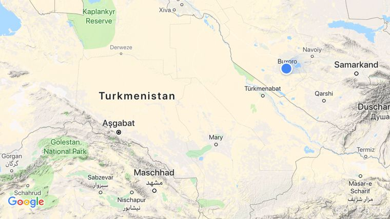
Beim Packen der Motorräder vor dem Hotel Mary treffen wir einen polnischer Antonov Pilot der gerade von Indien kam und halten ein kleines Schwätzchen mit ihm. Er spricht gut deutsch und meint, dass er weiter nach Kuwait fliegen wird.
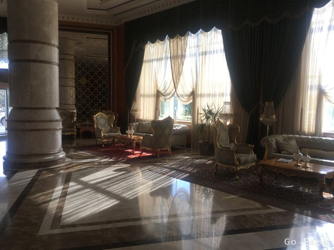
Hotel Mary
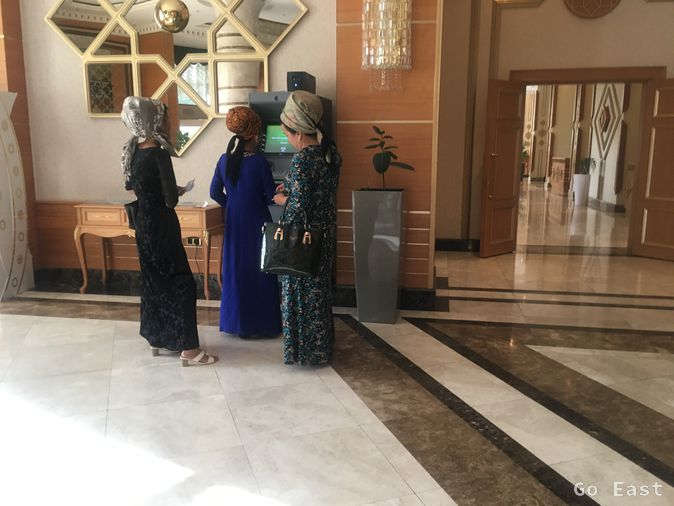
Turkmenische Mode
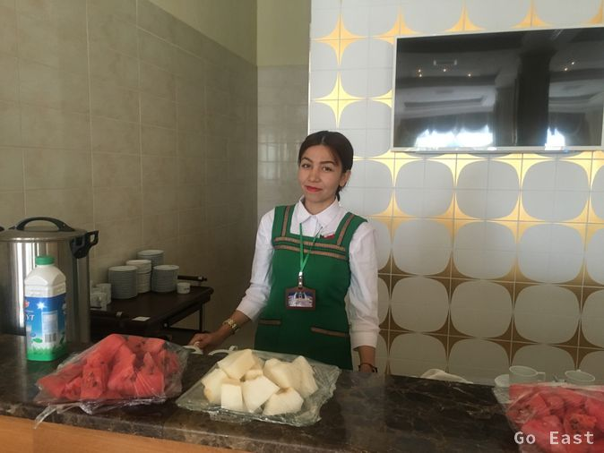
Hotel Mary
Wir fahren los, raus aus Mary geht sehr gut. Die Straßen sind breit und wenig Verkehr. Wir sehen sehr sauber herausgeputzte Gebäude und Monumente, die der Potentat in Auftrag gegeben hat. Die Straßen in der Stadt sind viel zu breit aber für uns ist es besser so, als Stau zu haben.
Nach der Stadtgrenze ist die Straße sehr brüchig und mit zahllosen Schlaglöchern übersät.
Unverständlich, wie ein so reiches Land solche Steinzeitstraßen haben kann. Und das auf der Hauptverkehrsader.
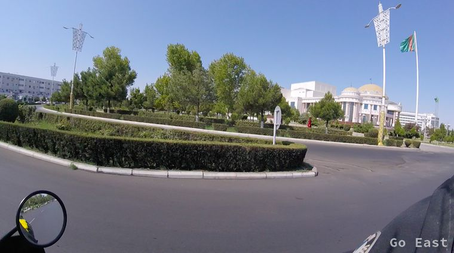
Durch die Wüste Karakum
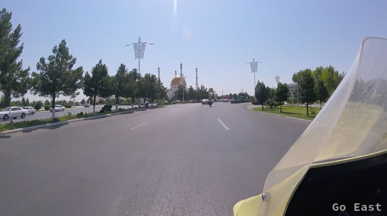
Durch die Wüste Karakum
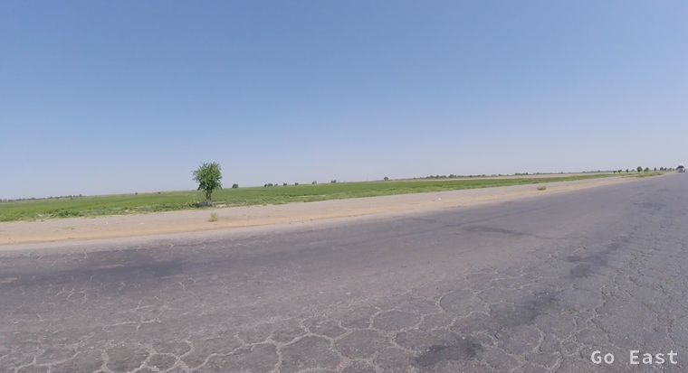
Durch die Wüste Karakum
Zu der Hitze, die sich so auf Mitte 40 Grad einpendelt kommt noch ein heißer Wüstenwind dazu, der uns richtig durchföhnt. Ein Fahren mit offenem Visier ist undenkbar. Viele Polizeikontrollen, die uns aber in Ruhe lassen. Die Uniformen erinnern mich an VoPos.
Wir sehen wieder Dromedare am Straßenrand und nehmen an einem Rastpunkt Wasser auf.
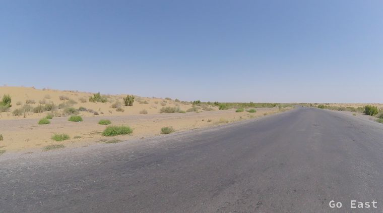
Durch die Wüste Karakum
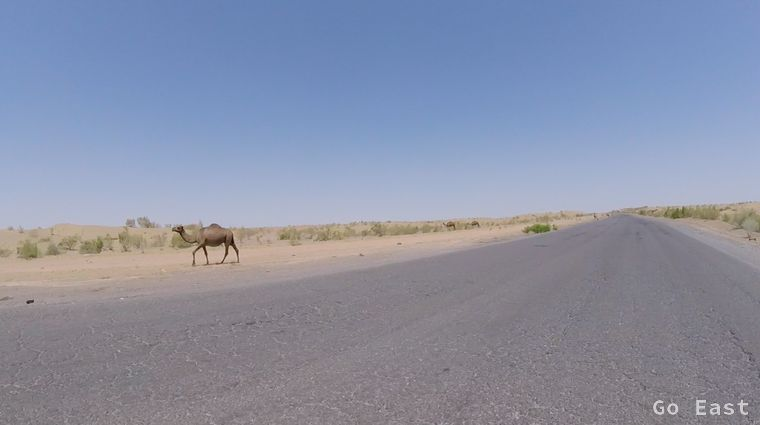
Durch die Wüste Karakum
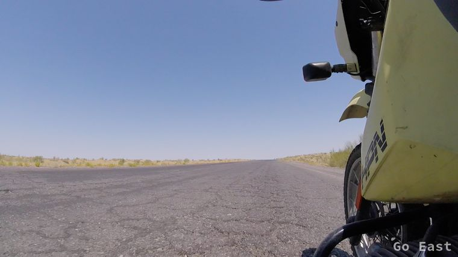
Durch die Wüste Karakum
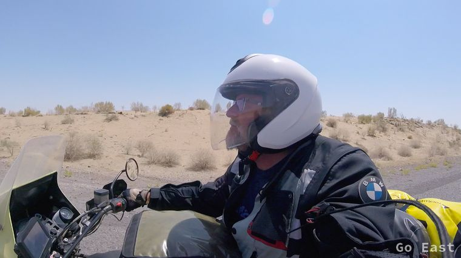
Durch die Wüste Karakum
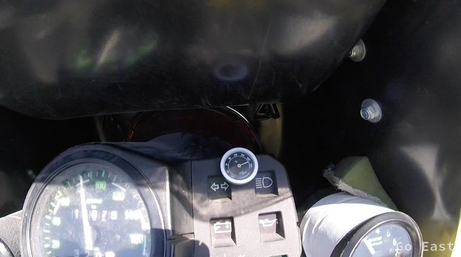
Durch die Wüste Karakum
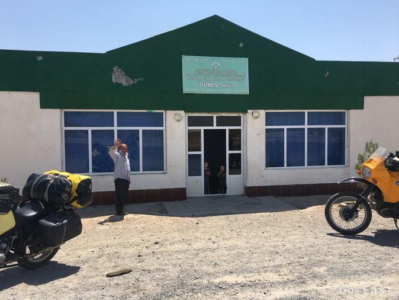
Raststätte
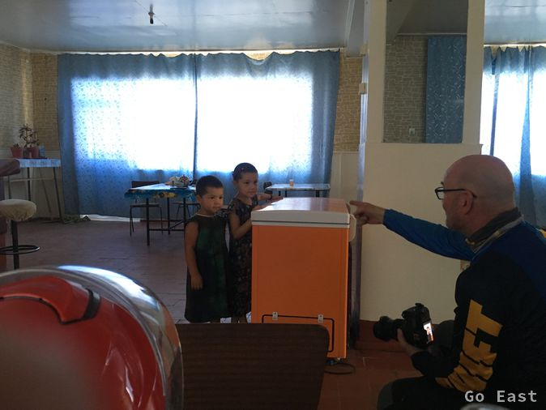
Raststätte
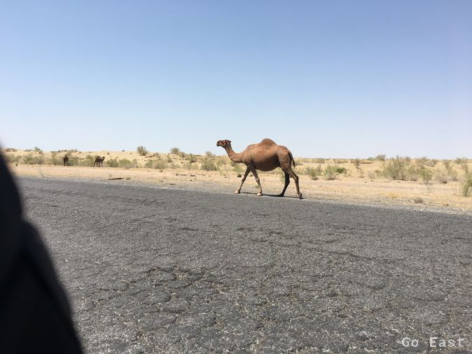
Durch die Wüste Karakum
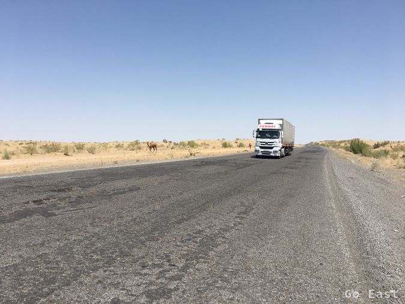
Durch die Wüste Karakum
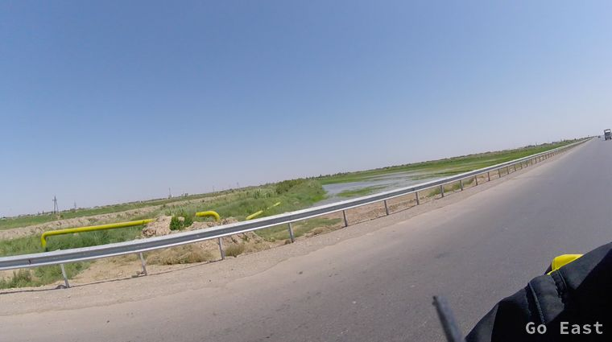
Bewässerung in der Wüste Karakum
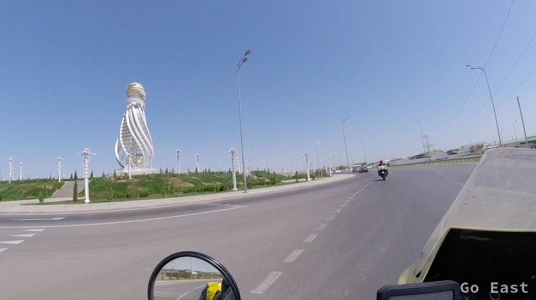
Türkmenabad kurz vor der Grenze
Die letzten 50km von den 250km bis zum Grenzort machen mir zu schaffen und ich hätte nochmals eine Pause einlegen sollen. An der Grenze angekommen, bin ich ziemlich platt.
Wir treffen die Schweizer Motorradfahrer aus Zürich wieder, deren Maschinen wir am Hotel in Mary gesehen hatten. Wir tanken nochmals auf und die Ausreiseprozedur beginnt.
GPS abgeben, Gepäck abladen, Kontrolle hier, immer die gleichen Fragen dort. Immer freundliches Gesicht machen, wir sind ja Botschafter unseres Landes, keep smiling und mein Magen rebelliert und mir ist ganz flau. Erst ein Stück 'Honigschlotzer und ein Liter Wasser pumpen mich wieder auf und es geht weiter auf die usbekische Seite. Die Schweizer sind schon durch und wir verabreden uns für das Hotel Malika in Bukhara.
Hier geht es zügig ab und die Methode hat eine logische Folge. Nach insgesamt 3Std haben wir die Grenzabfertigungen hinter uns und es geht weiter die letzten 100km nach Bukhara. Die Straße ist besser hier in Usbekistan.
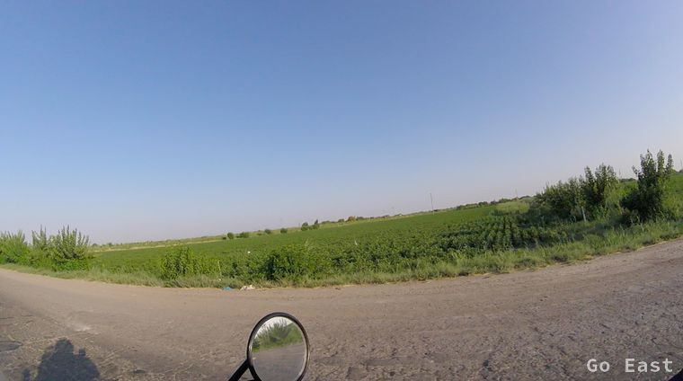
Baumwollfelder in Usbekistan
Wir erreichen Bukhara, das auch an der Seidenstraße liegt. Es ist gut mit internationalen Gästen besucht und wir haben das Gefühl, wieder auf dem Planeten Erde zu sein.
Wifi, WhatsApp, Geldautomat, kein Schwarzmarkt mehr, alles relaxed. Lachende Gesichter. Was für ein deprimierendes Land doch Turkmenistan ist. Wir treffen die Schweizer Raimund und Philipp wieder und verbringen den Abend im Restaurant bei gutem Essen und Bier und tauschen Reiseerlebnisse aus.
Die turkmenische Landeswährung, von der wir noch ein paar Scheine haben, will hier keiner haben, geschweige denn tauschen. Dem Herrn an der Hotelrezeption gebe ich einen Schein, der ihn in sein Album heftet. Turkmenistan abgehakt for ever.
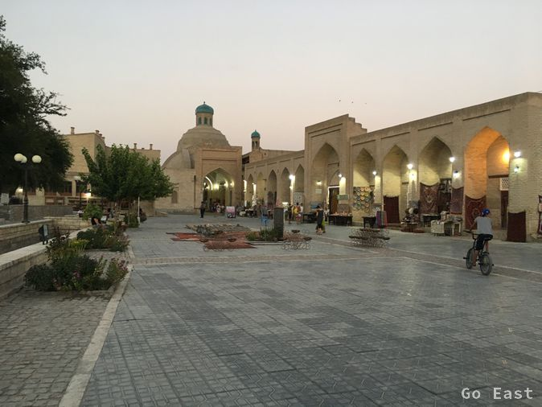
Bukhara
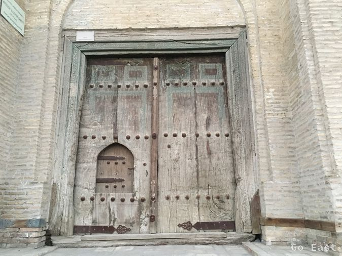
Bukhara
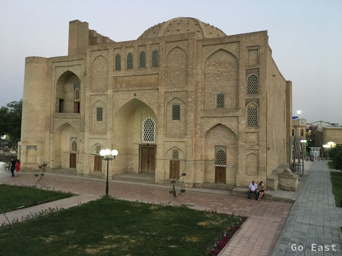
Bukhara